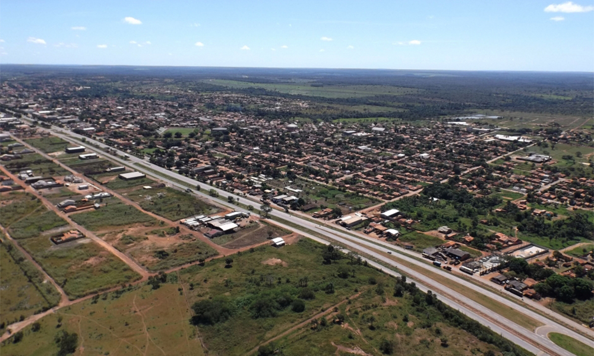

menu
MENU
Serviços
Transparência
Acesso a informação
Órgãos do Governo
arrow_drop_down
close
search
Secretarias
Casa Civil
Casa Militar
Controladoria-Geral do Estado
Corpo de Bombeiros Militar
Polícia Militar
Procuradoria-Geral do Estado
Secretaria da Administração
Secretaria da Agricultura, Pecuária e Aquicultura
Secretaria da Cidadania e Justiça
Secretaria da Comunicação
Secretaria da Educação, Juventude e Esporte
Secretaria da Fazenda e Planejamento
Secretaria da Indústria, Comércio e Serviços
Secretaria da Infraestrutura, Cidades e Habitação
Secretaria da Saúde
Secretaria da Segurança Pública
Secretaria do Meio Ambiente e Recursos Hídricos
Secretaria do Trabalho e Desenvolvimento Social
Autarquias
Agência Tocantinense de Regulação, Controle e Fiscalização de Serviços Públicos
Agência Tocantinense de Saneamento
Agência Universidade Estadual do Tocantins
Agência de Defesa Agropecuária
Agência de Fomento
Agência de Metrologia
Agência de Tecnologia da Informação
Agência do Desenvolvimento do Turismo, Cultura e Economia Criativa
Companhia Imobiliária do Tocantins
Departamento Estadual de Trânsito
Fundação de Amparo à Pesquisa
Instituto Natureza do Tocantins
Instituto de Desenvolvimento Rural
Instituto de Gestão Previdenciária
Instituto de Terras do Estado do Tocantins
Junta Comercial
Sites especiais
Congresso Saúde
Feira de Tecnologia Agropecuária do Tocantins
Jogos Estudantis do Tocantins
Turismo
Agência Tocantinense de Regulação, Controle e Fiscalização de Serviços Públicos
search
busca
menu
menu
Institucional
keyboard_arrow_down
Regimento Interno ATI
Estrutura
Legislação
Carta de Serviços
Serviços
keyboard_arrow_down
Apoio a Cotação de Aquisições e Contratações de Bens e Serviços de TI
Acompanhamento da Gestão de Projetos de TI
Solicitação de Operações no Catálogo de Serviços
Vistoria de Aquisições de Bens de TI
Indicação de Fiscal Técnico e Substituto de Fiscal Técnico para Contratos de TI
Consulta para Renovação de Contratos de TI
Aquisição e Contratação de Bens e Serviços de TI
Domínio to.gov.br
Gestão de TI
keyboard_arrow_down
Relatórios
Painéis
Inovações Tecnológicas
Catálogo de Serviços
Processos
Atas de Registro de Preços
Sistemas
Suporte
Webmail
Contato
Ramais
Enviar Currículo
Requerimentos para o trabalho remoto
Modelos de Documentos ATI
Parcerias ATI
keyboard_arrow_down
SCAM Champions Team
Aline Pires - Odontologia Especializada
Modacar Lava Jato
Jalapa - Fisio e Terapias Integrativas
Casa São Paulo
Art Sport Fitness Club
Pedro Restaurante
Tocantins participa da Jornada Técnica da Região Norte que trata de pragas dos citros

Inovação
Governo do Tocantins lançará oficialmente a campanha de vacinação contra febre aftosa em Gurupi
Inovação
Tocantins participará de encontro sobre controle de agrotóxicos em Santa Catarina
Serviços
search
Ver todos
open_in_new
Emissão Nota Fiscal Avulsa Eletrônica
Presencial e online
É o imposto sobre a propriedade de veículos automotores que incide sobre a propriedade de veículo automotor aéreo, aquático ou terrestre, quaisquer que sejam as suas espécies, ainda que o proprietário seja domiciliado no exterior.
Emissão Nota Fiscal Avulsa Eletrônica
Presencial e online
É o imposto sobre a propriedade de veículos automotores que incide sobre a propriedade de veículo automotor aéreo, aquático ou terrestre, quaisquer que sejam as suas espécies, ainda que o proprietário seja domiciliado no exterior.
Emissão Nota Fiscal Avulsa Eletrônica
Presencial e online
É o imposto sobre a propriedade de veículos automotores que incide sobre a propriedade de veículo automotor aéreo, aquático ou terrestre, quaisquer que sejam as suas espécies, ainda que o proprietário seja domiciliado no exterior.
Emissão Nota Fiscal Avulsa Eletrônica
Presencial e online
É o imposto sobre a propriedade de veículos automotores que incide sobre a propriedade de veículo automotor aéreo, aquático ou terrestre, quaisquer que sejam as suas espécies, ainda que o proprietário seja domiciliado no exterior.
Emissão Nota Fiscal Avulsa Eletrônica
Presencial e online
É o imposto sobre a propriedade de veículos automotores que incide sobre a propriedade de veículo automotor aéreo, aquático ou terrestre, quaisquer que sejam as suas espécies, ainda que o proprietário seja domiciliado no exterior.
Emissão Nota Fiscal Avulsa Eletrônica
Presencial e online
É o imposto sobre a propriedade de veículos automotores que incide sobre a propriedade de veículo automotor aéreo, aquático ou terrestre, quaisquer que sejam as suas espécies, ainda que o proprietário seja domiciliado no exterior.
Conhecimento
Palestra na UFT orienta estudantes sobre registro de estabelecimentos no serviço de inspeção oficial e rotulagem de produtos de origem animal
Conhecimento
Curso de Resenha é sucesso entre estudantes e profissionais
Serviços
Produtor rural poderá declarar eletronicamente a vacinação contra febre aftosa
Serviços
Produtor rural poderá declarar eletronicamente a vacinação contra febre aftosa
Inovação
Tocantins participará de encontro sobre controle de agrotóxicos em Santa Catarina
Últimas notícias
Segurança Pública
today
10/03/2020 22:30
Polícia Civil prende suspeitos de atrapalhar investigações na operação Ongs de papel
Ações abordadas são importantes para o aprimoramento da Gestão Pública Estadual
Segurança Pública
today
10/03/2020 22:30
Polícia Civil prende suspeitos de atrapalhar investigações na operação Ongs de papel
Ações abordadas são importantes para o aprimoramento da Gestão Pública Estadual
Segurança Pública
today
10/03/2020 22:30
Polícia Civil prende suspeitos de atrapalhar investigações na operação Ongs de papel
Ações abordadas são importantes para o aprimoramento da Gestão Pública Estadual
Segurança Pública
today
10/03/2020 22:30
Polícia Civil prende suspeitos de atrapalhar investigações na operação Ongs de papel
Ações abordadas são importantes para o aprimoramento da Gestão Pública Estadual
Segurança Pública
today
10/03/2020 22:30
Polícia Civil prende suspeitos de atrapalhar investigações na operação Ongs de papel
Ações abordadas são importantes para o aprimoramento da Gestão Pública Estadual
Mais notícias
Sistemas
search
Buscar em todos os órgãos
Buscar apenas em SECAD
Portal do Servidor
Servir
SIGA - Almoxarifado
Avaliação Periódica
Portal do Servidor
Arrocha o buriti